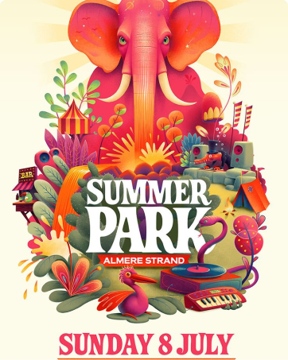

Detail Kegiatan
Silahkan masuk untuk mengakses semua fitur!

Festival Summer Park
Festival terbesar yang dibuat untuk mahasiswa FIF selama ujian akhir semester berlangsung. Acara ini mencakup berbagai kegiatan hiburan seperti stand makanan, konser musik, dan pameran seni. Festival ini bertujuan untuk memberikan kesempatan bagi mahasiswa untuk bersantai dan menikmati waktu bersama teman-teman setelah menghadapi tekanan ujian. Selain itu, festival ini juga menjadi ajang untuk menampilkan kreativitas dan bakat-bakat terpendam dari mahasiswa melalui berbagai pertunjukan dan kegiatan interaktif.
Kategori :
Festival
Tanggal Mulai :
8 Juni 2024
Tanggal Selesai :
9 Juni 2024
Waktu Mulai :
10.00 WIB
Waktu Selesai :
19.00 WIB
Lokasi :
GSG, Telkom University
Narahubung :
@himi_informatikans (Instagram)
Jumlah Pendaftar :
1000 Pendaftar
Penyelenggara :
HIMI Informaticans